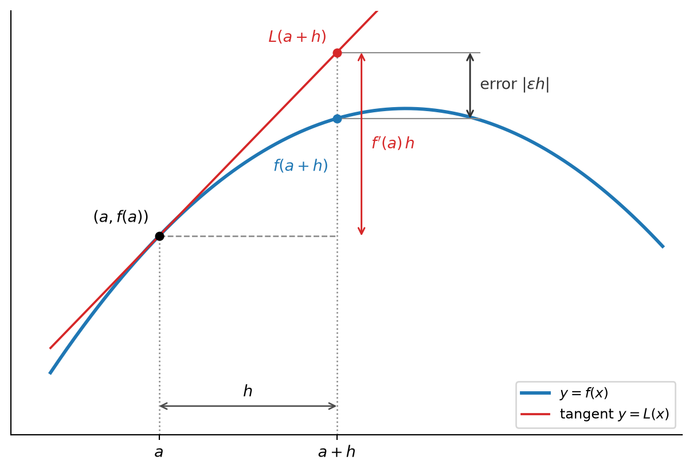

19 The Derivative as Linear Approximation
19.1 The Tangent Line as an Approximation
Near the point \((a,f(a))\), the graph of a differentiable function is very close to its tangent line. Since lines are easy to evaluate, we can use the tangent to approximate the values \(f(a+h)\) for small \(h\) (Figure 19.1).
To use the tangent, we need its equation. The tangent at \((a,f(a))\) is the line through the point \((a,f(a))\) with slope \(f'(a)\) (Definition 15.2). In point-slope form, \[ y - f(a) = f'(a)\,(x-a). \]
To approximate \(f\) close to \(a\), plug in \(a+h\) for \(x\): \[ f(a+h) \approx L(a+h) = f(a) + f'(a)\,(a+h-a) = f(a) + f'(a)\cdot h . \] So to estimate \(f\) near \(a\), we only need two numbers: the value \(f(a)\) and the derivative \(f'(a)\).
NoteSolution
Solution. We have \(f(1) = 1-2+4 = 3\) and \(f'(x) = 3x^2-2\), so \(f'(1) = 1\). The linear approximation about \(1\) is \[ L(x) = f(1) + f'(1)\,(x-1) = 3 + (x-1), \] and \[ f(1.1) \approx L(1.1) = 3 + (1.1-1) = 3 + 0.1 = 3.1 . \] The true value is \(f(1.1) = 1.331 - 2.2 + 4 = 3.131\). Again the approximation is an underestimate, this time by \(0.031\).
NoteSolution
Solution. In both cases \(f'\) is increasing near \(a\): \(f'(x)=2x\) for the first function and \(f'(x) = 3x^2-2\) (increasing for \(x\ge0\)) for the second. So \(f\) is concave up near \(a\) (Definition 16.2): the graph bends upward, away from the tangent, and therefore lies above the tangent line. The tangent values \(L(a+h)\) are then too small. In Figure 19.1 the function is concave down, the graph lies below the tangent, and the approximation is an overestimate. We prove this precisely in Proposition 19.1.
19.2 Estimating the Error
How far off is \(L(a+h)\), relative to \(h\)? We write the error as a multiple of \(h\): \[ f(a+h) = L(a+h) + \underbrace{\varepsilon h}_{\text{error term}} = f(a) + f'(a)\,h + \varepsilon h , \] where \(\varepsilon\) depends on \(h\). Solving for \(\varepsilon\), \[ \frac{f(a+h)-f(a)}{h} = f'(a) + \varepsilon. \]
This tells us that the error goes to \(0\) faster than \(h\), but not how much faster. To estimate \(\varepsilon\), suppose \(h>0\) and \(f\) is differentiable on an open interval containing \([a,a+h]\). By the Mean Value Theorem (Theorem 18.1), there is \(\xi\) with \(a<\xi<a+h\) and \[ \frac{f(a+h)-f(a)}{h} = f'(\xi) . \] Comparing with the expression above gives \[ \varepsilon= f'(\xi) - f'(a) . \tag{19.1}\]
So the error depends on how much the derivative changes between \(a\) and \(\xi\). This settles Exercise 19.2.
NoteProof
Proof. Let \(x=a+h\in I\). For \(h=0\) both sides equal \(f(a)\). For \(h>0\), Equation 19.1 gives \(f(a+h) - L(a+h) = \varepsilon h = \big(f'(\xi)-f'(a)\big)h\) with \(a<\xi<a+h\). Since \(f'\) is increasing, \(f'(\xi)\ge f'(a)\), so this is \(\ge0\).
For \(h<0\), apply Theorem 18.1 on \([a+h,a]\) instead: \(\frac{f(a+h)-f(a)}{h} = \frac{f(a)-f(a+h)}{a-(a+h)} = f'(\xi)\) for some \(\xi\) with \(a+h<\xi<a\), and again \(f(a+h)-L(a+h) = \big(f'(\xi)-f'(a)\big)h\). Now \(f'(\xi)\le f'(a)\) and \(h<0\), so the product is again \(\ge0\).
For a concave-down function the inequality is reversed, and the linear approximation overestimates.
Bounding the error with the second derivative
How can we bound \(f'(\xi) - f'(a)\)? If \(f'\) is itself differentiable, we can use the Mean Value Theorem again, this time for \(f'\). The derivative of \(f'\) is the second derivative of \(f\), \[ f''(x) = (f')'(x) . \] For example, \(f(x)=x^2+1\) has \(f'(x)=2x\) and \(f''(x)=2\), and \(f(x)=x^3-2x+4\) has \(f'(x)=3x^2-2\) and \(f''(x) = 6x\).
Applying Theorem 18.1 to \(f'\) on \([a,\xi]\), we find \(\eta\) with \(a<\eta<\xi\) and \[ f'(\xi) - f'(a) = f''(\eta)\,(\xi - a) . \] Since \(0<\xi-a<h\), it follows that \[ \lvert \varepsilon \rvert = \underbrace{\lvert \xi-a \rvert}_{\le h}\cdot\underbrace{\lvert f''(\eta) \rvert}_{\le M} \le h\cdot M , \] where \(M\) is any bound for \(\lvert f'' \rvert\) on the interval \([a,a+h]\). Multiplying by \(h\), we obtain a bound for the error term.
NoteProof
Proof. For \(h>0\) this is the computation above. (The second application of Theorem 18.1 is allowed because \(f'\) is differentiable, hence continuous by Theorem 16.1, on an open interval containing \([a,\xi]\).) For \(h<0\), the same argument on the interval \([a+h,a]\) gives \(\lvert \varepsilon \rvert\le\lvert h \rvert\cdot M\), hence \(\lvert \varepsilon h \rvert\le M h^2\). For \(h=0\) there is nothing to prove.
For small \(h\), the bound \(M h^2\) is much smaller than the linear term \(f'(a)\,h\), unless \(f'(a)=0\): their ratio is \(\frac{M h^2}{\lvert f'(a) \rvert\,\lvert h \rvert} = \frac{M}{\lvert f'(a) \rvert}\lvert h \rvert\), which goes to \(0\) with \(h\).
NoteSolution
Solution. A few reasons:
- The error is quadratic in \(h\). Making \(h\) ten times smaller makes the error bound a hundred times smaller. For \(f(x)=x^3-2x+4\) at \(a=1\), the actual errors \(3h^2+h^3\) are \[ 0.031 \ (h=0.1), \qquad 0.000301\ (h=0.01), \qquad 0.000003001\ (h=0.001) . \] The linear term \(f'(1)\,h = h\), on the other hand, only shrinks by a factor of ten each time. So for small \(h\), almost all of the change \(f(a+h)-f(a)\) is captured by the linear term.
- It is a guarantee. We usually use the linear approximation when we cannot easily compute \(f(a+h)\). The theorem tells us how good the approximation is without knowing the true value: we only need a bound for \(f''\). For example, for \(f(x)=\sin x\) and \(a=0\) we get \(\sin(0.1)\approx \sin 0 + \cos 0\cdot 0.1 = 0.1\). Since \(f''(x) = -\sin x\) and \(\lvert \sin x \rvert\le x\le 0.1\) on \([0,0.1]\), the error is at most \(0.1\cdot(0.1)^2 = 0.001\). (The true value is \(\sin(0.1) = 0.09983\ldots\), an error of about \(0.00017\).)
- It makes step-by-step methods work. Roughly speaking: in Euler’s method, a function is approximated by following tangent lines over many small steps of size \(h\). Over an interval of fixed length we need about \(1/h\) steps, each with an error of order \(h^2\). So the total error is of order \(\frac1h\cdot h^2 = h\), which goes to \(0\) as \(h\to0\). If the error per step were only proportional to \(h\), the errors would add up to something that does not shrink.
19.3 Summary
- The linear approximation of \(f\) about \(a\) is the tangent line \(L(x) = f(a) + f'(a)(x-a)\) (Definition 19.1). For \(x=a+h\) it gives \(f(a+h)\approx f(a) + f'(a)\,h\), using only \(f(a)\) and \(f'(a)\). For example, \(2.1^2+1\approx 5.4\) (true value \(5.41\)) (Example 19.1).
- Writing the error as \(\varepsilon h\), so that \(f(a+h) = f(a) + f'(a)\,h + \varepsilon h\), differentiability of \(f\) at \(a\) means exactly that \(\varepsilon\to0\) as \(h\to0\) (Remark 19.1).
- By the Mean Value Theorem, \(\varepsilon= f'(\xi)-f'(a)\) for some \(\xi\) between \(a\) and \(a+h\) (Equation 19.1). Consequently, the tangent of a concave-up function lies below its graph, and the linear approximation underestimates (Proposition 19.1). For a concave-down function it overestimates.
- Applying the Mean Value Theorem a second time, to \(f'\), gives the error bound \(\lvert f(a+h)-L(a+h) \rvert\le M h^2\), where \(M\) bounds \(\lvert f'' \rvert\) between \(a\) and \(a+h\) (Theorem 19.1). The error is quadratic in \(h\), much smaller than the linear term \(f'(a)\,h\) for small \(h\) (unless \(f'(a)=0\)). The sharper bound \(\frac12 Mh^2\) will come later (Remark 19.2).